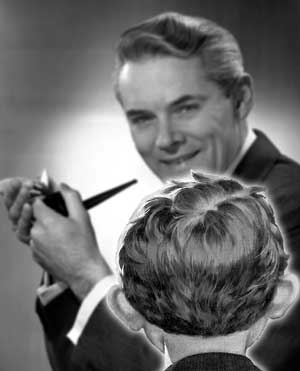

|

Daddy explains U.S. foreign policy
It's so simple, even a child can understand it.
- - - - - - - - - -
skreed.com
Q: Daddy, why did we have to attack Iraq?
A: Because they had weapons of mass destruction honey.
Q: But the inspectors didn't find any weapons of mass destruction.
A: That's because the Iraqis were hiding them.
Q: And that's why we invaded Iraq?
A: Yep. Invasions always work better than inspections.
Q: But after we invaded them, we STILL didn't find any weapons of mass destruction, did we?
A: That's because the weapons are so well hidden. Don't worry, we'll find something, probably right before the 2004 election.
Q: Why did Iraq want all those weapons of mass destruction?
A: To use them in a war, silly.
Q: I'm confused. If they had all those weapons that they planned to use in a war, then why didn't they use any of those weapons when we went to war with them?
A: Well, obviously they didn't want anyone to know they had those weapons, so they chose to die by the thousands rather than defend themselves.
Q: That doesn't make sense Daddy. Why would they choose to die if they had all those big weapons to fight us back with?
A: It's a different culture. It's not supposed to make sense.
Q: I don't know about you, but I don't think they had any of those weapons our government said they did.
A: Well, you know, it doesn't matter whether or not they had those weapons. We had another good reason to invade them anyway.
Q: And what was that?
A: Even if Iraq didn't have weapons of mass destruction, Saddam Hussein was a cruel dictator, which is another good reason to invade another country.
Q: Why? What does a cruel dictator do that makes it OK to invade his country?
A: Well, for one thing, he tortured his own people.
Q: Kind of like what they do in China?
A: Don't go comparing China to Iraq. China is a good economic competitor, where millions of people work for slave wages in sweatshops to make U.S. corporations richer.
Q: So if a country lets its people be exploited for American corporate gain, it's a good country, even if that country tortures people?
A: Right.
Q: Why were people in Iraq being tortured?
A: For political crimes, mostly, like criticizing the government. People who criticized the government in Iraq were sent to prison and tortured.
Q: Isn't that exactly what happens in China?
A: I told you, China is different.
Q: What's the difference between China and Iraq?
A: Well, for one thing, Iraq was ruled by the Ba'ath party, while China is Communist.
Q: Didn't you once tell me Communists were bad?
A: No, just Cuban Communists are bad.
Q: How are the Cuban Communists bad?
A: Well, for one thing, people who criticize the government in Cuba are sent to prison and tortured.
Q: Like in Iraq?
A: Exactly.
Q: And like in China, too?
A: I told you, China's a good economic competitor. Cuba, on the other hand, is not.
Q: How come Cuba isn't a good economic competitor?
A: Well, you see, back in the early 1960s, our government passed some laws that made it illegal for Americans to trade or do any business with Cuba until they stopped being Communists and started being capitalists like us.
Q: But if we got rid of those laws, opened up trade with Cuba, and started doing business with them, wouldn't that help the Cubans become capitalists?
A: Don't be a smart-ass.
Q: I didn't think I was being one.
A: Well, anyway, they also don't have freedom of religion in Cuba.
Q: Kind of like China and the Falun Gong movement?
A: I told you, stop saying bad things about China. Anyway, Saddam Hussein came to power through a military coup, so he's not really a legitimate leader anyway.
Q: What's a military coup?
A: That's when a military general takes over the government of a country by force, instead of holding free elections like we do in the United States.
Q: Didn't the ruler of Pakistan come to power by a military coup?
A: You mean General Pervez Musharraf? Uh, yeah, he did, but Pakistan is our friend.
Q: Why is Pakistan our friend if their leader is illegitimate?
A: I never said Pervez Musharraf was illegitimate.
Q: Didn't you just say a military general who comes to power by forcibly overthrowing the legitimate government of a nation is an illegitimate leader?
A: Only Saddam Hussein. Pervez Musharraf is our friend, because he helped us invade Afghanistan.
Q: Why did we invade Afghanistan?
A: Because of what they did to us on September 11th.
Q: What did Afghanistan do to us on September 11th?
A: Well, on September 11th, nineteen men? Fifteen of them Saudi Arabians, hijacked four airplanes and flew three of them into buildings, killing over 3,000 Americans.
Q: So how did Afghanistan figure into all that?
A: Afghanistan was where those bad men trained, under the oppressive rule of the Taliban.
Q: Aren't the Taliban those bad radical Islamics who chopped off people's heads and hands?
A: Yes, that's exactly who they were. Not only did they chop off people's heads and hands, but they oppressed women too.
Q: Didn't the Bush administration give the Taliban 43 million dollars back in May of 2001?
A: Yes, but that money was a reward because they did such a good job fighting drugs.
Q: Fighting drugs?
A: Yes, the Taliban were very helpful in stopping people from growing opium poppies.
Q: How did they do such a good job?
A: Simple. If people were caught growing opium poppies, the Taliban would have their hands and heads cut off.
Q: So, when the Taliban cut off people's heads and hands for growing flowers, that was OK, but not if they cut people's heads and hands off for other reasons?
A: Yes. It's OK with us if radical Islamic fundamentalists cut off people's hands for growing flowers, but it's cruel if they cut off people's hands for stealing bread.
Q: Don't they also cut off people's hands and heads in Saudi Arabia?
A: That's different. Afghanistan was ruled by a tyrannical patriarchy that oppressed women and forced them to wear burqas whenever they were in public, with death by stoning as the penalty for women who did not comply.
Q: Don't Saudi women have to wear burqas in public, too?
A: No, Saudi women merely wear a traditional Islamic body covering.
Q: What's the difference?
A: The traditional Islamic covering worn by Saudi women is a modest yet fashionable garment that covers all of a woman's body except for her eyes and fingers. The burqa, on the other hand, is an evil tool of patriarchal oppression that covers all of a woman's body except for her eyes and fingers.
Q: It sounds like the same thing with a different name.
A: Now, don't go comparing Afghanistan and Saudi Arabia. The Saudis are our friends.
Q: But I thought you said 15 of the 19 hijackers on September 11th were from Saudi Arabia.
A: Yes, but they trained in Afghanistan.
Q: Who trained them?
A: A very bad man named Osama bin Laden.
Q: Was he from Afghanistan?
A: Uh, no, he was from Saudi Arabia too. But he was a bad man, a very bad man.
Q: I seem to recall he was our friend once.
A: Only when we helped him and the mujahadeen repel the Soviet invasion of Afghanistan back in the 1980s.
Q: Who are the Soviets? Was that the Evil Communist Empire Ronald Reagan talked about?
A: There are no more Soviets. The Soviet Union broke up in 1990 or thereabouts, and now they have elections and capitalism like us. We call them Russians now.
Q: So the Soviets -- I mean, the Russians -- are now our friends?
A: Well, not really. You see, they were our friends for many years after they stopped being Soviets, but then they decided not to support our invasion of Iraq, so we're mad at them now. We're also mad at the French and the Germans because they didn't help us invade Iraq either.
Q: So the French and Germans are evil too?
A: Not exactly evil, but just bad enough that we had to rename French fries and French toast to Freedom fries and Freedom toast.
Q: Do we always rename foods whenever another country doesn't do what we want them to do
A: No, we just do that to our friends. Our enemies, we invade.
Q: But wasn't Iraq one of our friends back in the 1980s?
A: Well, yeah. For a while.
Q: Was Saddam Hussein ruler of Iraq back then?
A: Yes, but at the time he was fighting against Iran, which made him our friend, temporarily.
Q: Why did that make him our friend?
A: Because at that time, Iran was our enemy.
Q: Isn't that when he gassed the Kurds?
A: Yeah, but since he was fighting against Iran at the time, we looked the other way, to show him we were his friend.
Q: So anyone who fights against one of our enemies automatically becomes our friend?
A: Most of the time, yes.
Q: And anyone who fights against one of our friends is automatically an enemy?
A: Sometimes that's true too. However, if American corporations can profit by selling weapons to both sides at the same time, all the better.
Q: Why?
A: Because war is good for the economy, which means war is good for America. Also, since God is on America's side, anyone who opposes war is a godless un-American Communist. Do you understand now why we attacked Iraq?
Q: I think so. We attacked them because God wanted us to, right?
A: Yes.
Q: But how did we know God wanted us to attack Iraq?
A: Well, you see, God personally speaks to George W. Bush and tells him what to do.
Q: So basically, what you're saying is that we attacked Iraq because George W. Bush hears voices in his head?
A. Yes! You finally understand how the world works. Now close your eyes, make yourself comfortable, and go to sleep. Good night.
Q: Good night, Daddy.

|